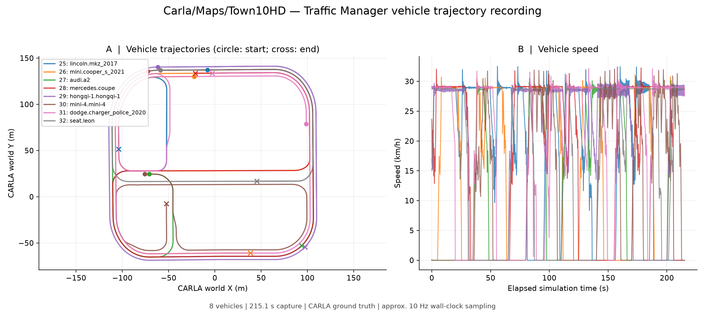
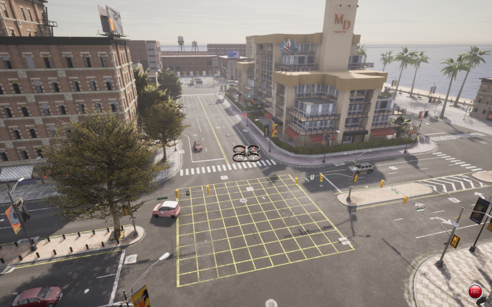

Traffic Manager 车辆轨迹与 AirSim 跟随
本示例提供 Traffic Manager 车辆生成、轨迹记录、快照导出和可选的 AirSim 无人机跟随，默认跟随点位于车辆后方 12 米、上方 25 米。
目标位置来自 CARLA 车辆坐标，尚未接入 YOLO 视觉闭环，也不能据此认定无人机动力学跟随已经验证通过。 默认使用 auto 控制模式并保留当前朝向：模拟器飞控就绪时使用 AirSim 速度接口，否则使用增量位姿控制。
环境与入口
入口位于功能包 tools/traffic，安装路径为 share/openhutb_yolo_mlp_control/tools/traffic，直接使用模拟器 API。
- Windows：运行 OpenHUTB AIR 场景和匹配版本的 CARLA Python API；车辆生成与记录使用该环境。
- WSL2 Ubuntu 22.04 / Python 3.10：运行随包提供的 AirSim 客户端和可选的无人机跟随。
- 绘图依赖：
numpy、matplotlib。AirSim 客户端依赖numpy、msgpack。
Windows 使用 HUTB 2.10.0 随附、与本机 Python 版本匹配的 wheel。
下面的 PowerShell 命令从仓库根目录执行。首次获取源码可运行 git clone https://github.com/OpenHUTB/ros2.git，然后 cd ros2；测试未合并 PR 时应先检出对应 PR 分支。
$repoDir = (git rev-parse --show-toplevel).Trim()
$toolsDir = Join-Path $repoDir 'src/air/openhutb_yolo_mlp_control/tools/traffic'
$env:HUTB_ROOT = Read-Host '输入本机 OpenHUTB 模拟器目录的完整路径'
$apiEnv = Join-Path $env:USERPROFILE '.venvs/openhutb_traffic_api'
python -m venv $apiEnv
$carlaPython = Join-Path $apiEnv 'Scripts/python.exe'
$pythonTag = (& $carlaPython -c "import sys; print('cp%d%d' % sys.version_info[:2])").Trim()
$wheels = @(Get-ChildItem (Join-Path $env:HUTB_ROOT 'PythonAPI/carla/dist') -Filter "hutb-*-$pythonTag-*-win_amd64.whl")
if ($wheels.Count -ne 1) { throw '请使用模拟器 wheel 所支持的 Python 版本，并核对 wheel 目录' }
& $carlaPython -m pip install --no-deps $wheels[0].FullName
$runDir = Join-Path $env:USERPROFILE ('OpenHUTB/traffic_runs/' + (Get-Date -Format 'yyyyMMdd_HHmmss'))
启动模拟器并加载地图。CARLA 默认地址为 127.0.0.1:2000，可通过 --host、--port 修改。
生成车辆与记录轨迹
第一个 PowerShell 终端生成 8 辆车并保持运行，按 Ctrl+C 清理本进程创建的车辆：
& $carlaPython "$toolsDir/main.py" spawn --count 8
第二个 PowerShell 终端在仓库根目录记录车辆：
$repoDir = (git rev-parse --show-toplevel).Trim()
$toolsDir = Join-Path $repoDir 'src/air/openhutb_yolo_mlp_control/tools/traffic'
$carlaPython = Join-Path $env:USERPROFILE '.venvs/openhutb_traffic_api/Scripts/python.exe'
$runDir = Join-Path $env:USERPROFILE ('OpenHUTB/traffic_runs/' + (Get-Date -Format 'yyyyMMdd_HHmmss'))
& $carlaPython "$toolsDir/main.py" record --output $runDir --duration 90
记录对象为本工具生成的车辆（role_name=openhutb_traffic_demo）。--duration 0 表示持续记录。另提供 launch.ps1 前台启动入口。
输出包括：
| 文件 | 内容 |
|---|---|
vehicle_trajectories.csv |
时间戳、模拟帧号、车辆 ID、车型、位置、朝向和速度 |
metadata.json |
当前地图、实际采集时长和记录数量 |
references.json |
当前地图中用于校准的静态场景参考点 |
live.json |
最新车辆状态，供可选的跟随入口读取 |
车辆 CSV 使用 CARLA 左手世界坐标，位置、朝向、速度单位分别为米、度、米每秒；按请求频率采样并跳过重复模拟帧。metadata.json 同时记录请求频率 sampling_hz_requested 和实测墙钟频率 sampling_hz_actual。
可选：生成轨迹快照
采集完成后，可在同一个 Windows Python 环境安装绘图依赖并导出 PNG、PDF 和每辆车的统计 CSV：
& $carlaPython -m pip install numpy matplotlib
& $carlaPython "$toolsDir/plot_trajectories.py" --data $runDir

圆点和叉号分别表示记录起点和终点；速度曲线使用模拟时间与水平速度，行驶距离按相邻二维位置采样点累加。
可选：WSL 仿真跟随
记录入口使用 --duration 0 持续运行；无人机跟随默认运行 90 秒，结束时取消运动任务并恢复启动前的 API 控制状态。
在第二个 PowerShell 终端（保留 $repoDir 和 $runDir）打开定位到同一源码目录的 WSL 终端，并打印本次数据目录的 WSL 路径：
wsl.exe -d Ubuntu-22.04 -e wslpath -u $runDir
wsl.exe -d Ubuntu-22.04 --cd $repoDir
随后在 WSL 中执行：
python3 -m venv "$HOME/.venvs/openhutb_traffic"
source "$HOME/.venvs/openhutb_traffic/bin/activate"
python -m pip install -r src/air/openhutb_yolo_mlp_control/tools/traffic/requirements.txt
export REPO_DIR="$(git rev-parse --show-toplevel)"
python -m pip install -e "$REPO_DIR/src/air/openhutb_yolo_mlp_control"
export TOOLS_DIR="$REPO_DIR/src/air/openhutb_yolo_mlp_control/tools/traffic"
read -r -p '输入上面 wslpath 输出的本次数据目录: ' TRAFFIC_DATA
export TRAFFIC_DATA
read -r -p '输入当前已验证可达的 Windows 主机 IP: ' AIRSIM_IP
export AIRSIM_IP
python - <<'PY'
import os, socket
with socket.create_connection((os.environ['AIRSIM_IP'], 41451), timeout=3):
print('AirSim TCP reachable')
PY
python "$TOOLS_DIR/follow_vehicle.py" --data "$TRAFFIC_DATA" \
--host "$AIRSIM_IP" --enable-follow-control --control-mode auto \
--speed 12 --duration 90
入口不会自动起飞；速度模式要求飞控报告在空中，位姿模式使用校准坐标检查无人机高于目标车辆路面至少 2 米，不依赖未就绪飞控的 landed_state。该高度仅作启动检查，不代表已检测无人机下方地形；跟随前请先用模拟器或现有飞行入口将无人机置于安全高度。auto 会根据 ready 状态选择控制后端；可用 --control-mode pose 强制使用位姿模式，或用 --control-mode velocity 强制使用原生速度模式。速度模式以车辆速度作为前馈，并按位置误差修正速度指令。
脚本最多导出 20 个候选静态对象，至少匹配 5 个后校准 CARLA 与 AirSim 坐标，允许残差为 0.25 米，适用于坐标轴对齐、Z 方向相反的场景。默认选择附近移动车辆，可用 --target-id 指定。
drone_follow.csv 记录无人机、期望跟随点和实际导航点的 NED 坐标、水平误差、实际速度、阶段及速度指令；follow_status.json 保存实际后端和控制恢复状态。通过 simGetCollisionInfo() 检测到本轮新增碰撞、目标消失、地图改变或车辆数据超时会结束跟随；历史碰撞不作为本轮退出依据。默认保留地形、建筑及车辆碰撞退出；位姿更新产生的新接触也可能触发退出。显式 --ignore-collision 同时允许位姿穿越几何体并跳过碰撞报告退出，仅供隔离仿真诊断。--speed（默认 12 m/s）在原生速度模式下是 AirSim 世界坐标速度指令上限，在位姿模式下是每秒位姿更新步长上限；实际运动还受模拟器飞控状态、动力学和碰撞检查影响，不能保证达到该数值。追车时上限应高于目标车速并留出爬升与追赶余量；12 m/s 也不保证实际追上车辆。结束时恢复启动前的 API 控制状态。
可选的 --avoid-obstacles 使用 CARLA 场景射线查询检查前方通道，尝试短距离侧向或向上的中间航点；无可用路线时保持当前位置（blocked），查询失败时结束跟随。它依赖模拟器几何信息，不是 LiDAR／视觉感知，也不是八叉树全局规划；通道由离散射线采样，可能遗漏细小障碍，不能保证无碰撞或持续追上车辆。--obstacle-margin 默认 1.5 米，与 --ignore-collision 不可同时使用。
启用前，在独立的 Windows PowerShell 终端使用匹配模拟器的 CARLA Python 启动只读查询服务：
$rayHost = Read-Host '输入已验证可从 WSL 访问的 Windows IP'
& $carlaPython "$toolsDir/obstacle_avoidance.py" --server --listen $rayHost
随后给上述 WSL 跟随命令加上 --avoid-obstacles；服务地址默认与 --host 相同，端口默认 41452，可用 --obstacle-host 和 --obstacle-port 修改。服务仅用于本地仿真测试，每次跟随重新启动一次。
另一个 WSL 终端设置相同的 TRAFFIC_DATA 后，可暂停、恢复或结束跟随：
# 暂停并保持位置
touch "$TRAFFIC_DATA/follow_pause"
# 恢复跟随
rm -f "$TRAFFIC_DATA/follow_pause"
# 结束跟随并释放控制
touch "$TRAFFIC_DATA/follow_exit"
也可按 Ctrl+C 结束跟随；恢复控制状态不执行降落或悬停，也不等同于键盘操控已验证恢复。若 spawn 被强制终止而有车辆残留，可在 Windows 运行 & $carlaPython "$toolsDir/main.py" clean 清理 role_name=openhutb_traffic_demo 的车辆。

图中展示场景车辆与无人机，静态截图不作为动力学跟随验证依据。
验证结果
Windows 11、Python 3.13.14、HUTB 2.10.0 / Town10HD 下完成车辆生成、记录与快照导出。在线复测确认 HUTB 当前构建 ready=false，moveByVelocityAsync() 和 moveToPositionAsync() 未产生可测水平位移；auto 因此选择 pose 后端，0.5 米空旷位姿更新在 0.2 秒内产生约 0.5 米位移。速度后端已通过本地单元测试，未将不可靠的原生速度接口作为 HUTB 在线验证结论。
本次修订在同一 HUTB 2.10.0 / Town10HD 实例完成 20 秒 auto 位姿跟随复测（--speed 12 --avoid-obstacles，保留碰撞检查）：记录 55 行，最高观测速度约 9.51 m/s，水平误差由 51.57 米降至 44.55 米，按时退出并恢复启动前的 API 控制状态。随后 60 秒复测记录 171 行，经历 climb、avoid 和 follow 阶段，按时退出并恢复控制；目标车中途停车，不能据此证明持续追上移动车辆。两轮均未替换飞控状态或碰撞报告。
位姿模式退出时恢复启动前的 API 控制状态，避免影响原有键盘接管设置。上述结果仅为有限场景复测，不代表完整车辆跟随或动力学速度跟随已经通过。
返回文档目录。
说明
本文档整理、代码重构和问题排查过程中使用了大模型辅助；提交者已检查全部内容并对最终结果负责。